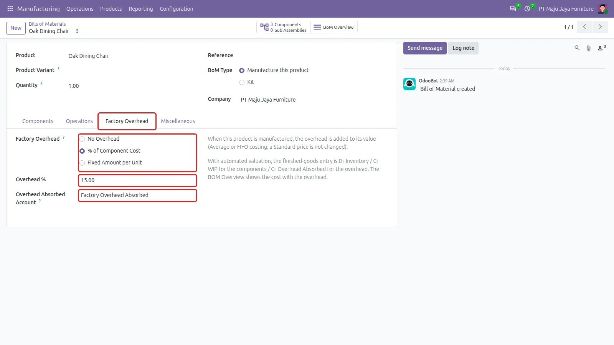
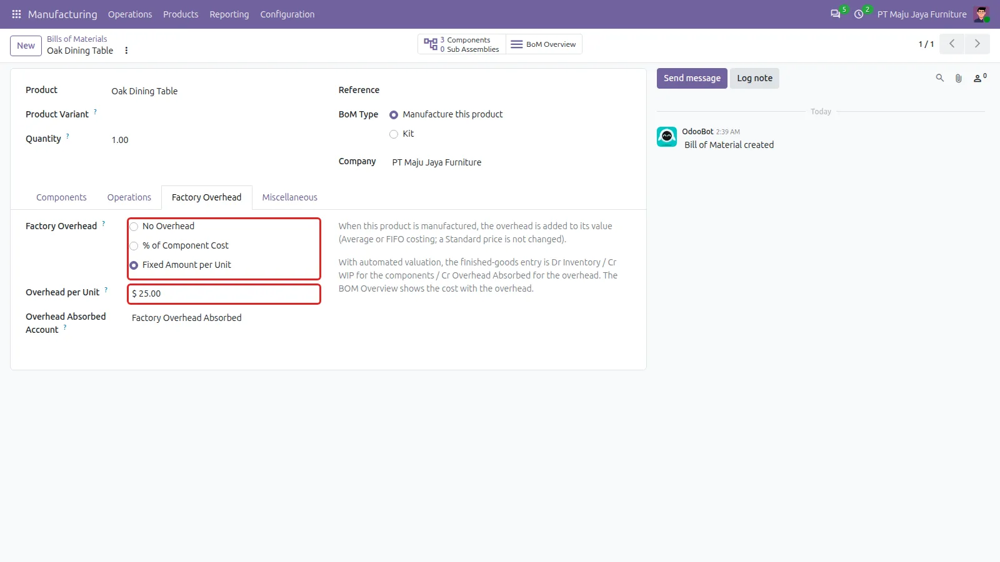
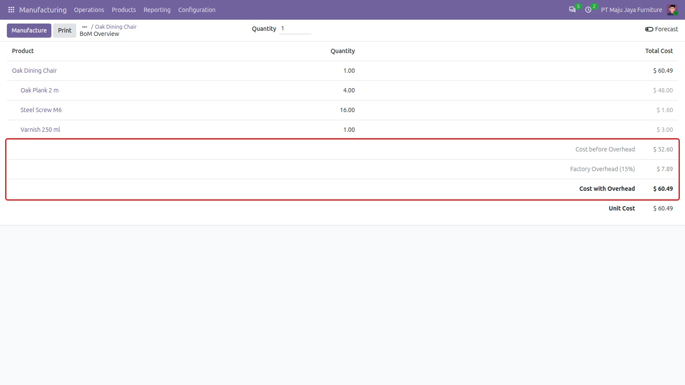
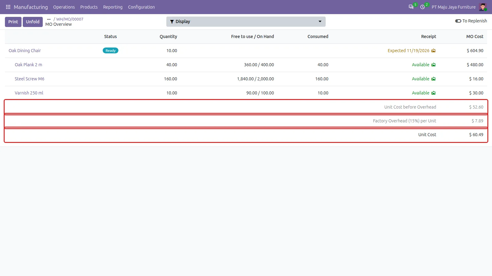
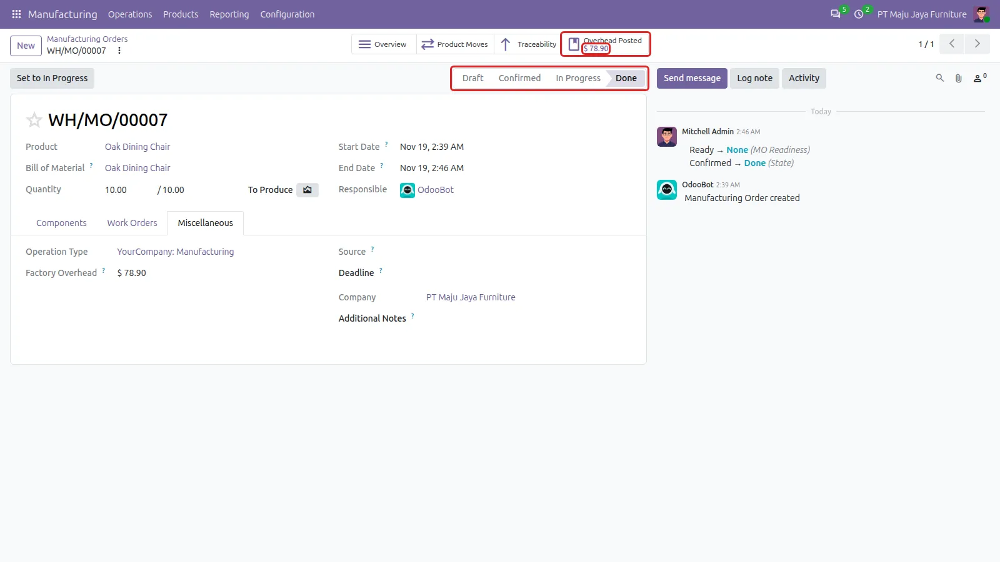
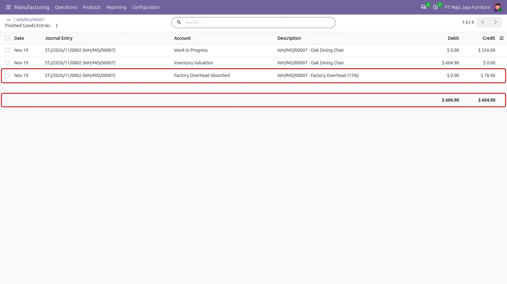
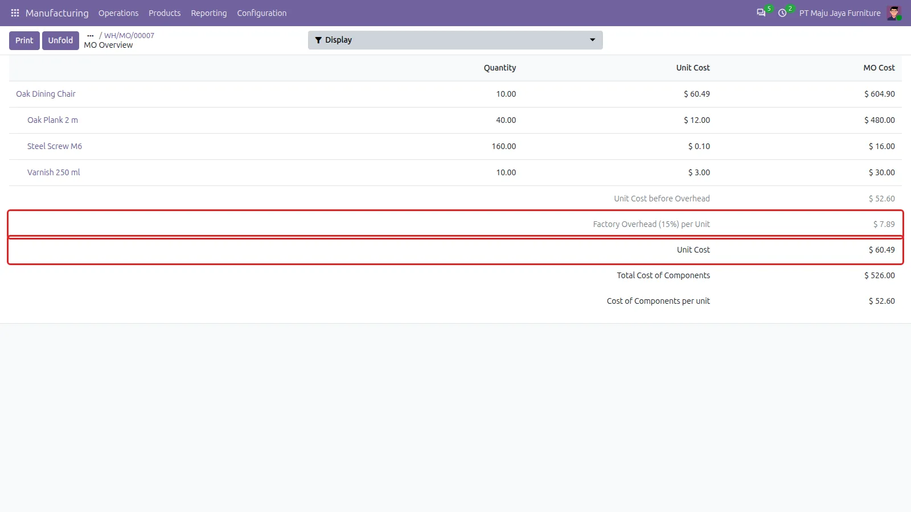
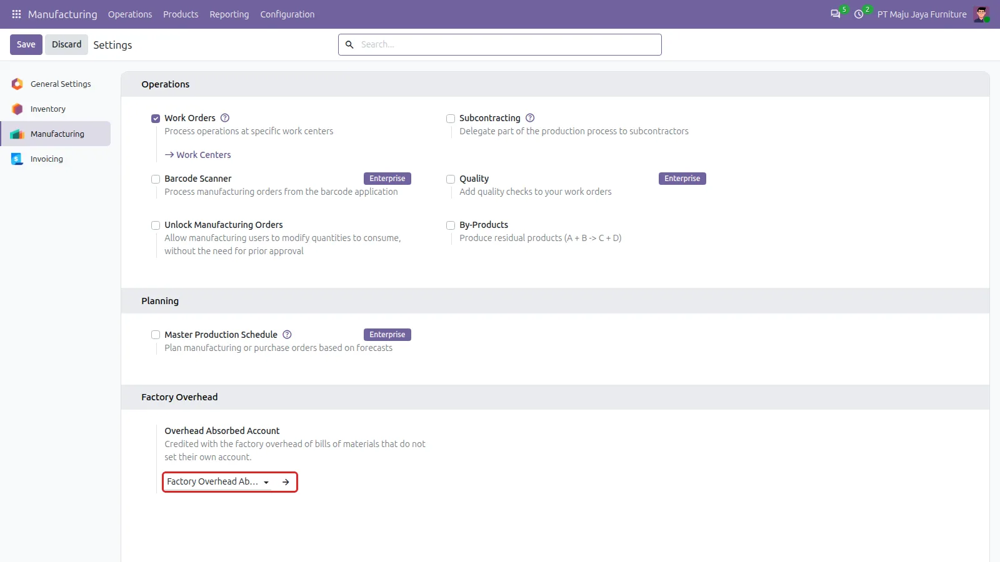

Manufacturing Overhead - Factory Overhead Cost in MRP
Manufacturing overhead absorbed into the cost of finished goods: a % of component cost or a fixed amount per unit per BOM, posted to the overhead account.
- Price
- $39
- Odoo versions
- 17.0
- 18.0
- 19.0
- 20.0
- Technical name
tamadoo_mrp_factory_overhead- License
- OPL-1

Text and screenshots below are from the Odoo 20.0 version of this module.
Absorb factory overhead (power, depreciation, supervision...) into the cost of what you manufacture: a percentage of the component cost or a fixed amount per unit, set per bill of materials, posted Dr Inventory / Cr Overhead Absorbed and visible in the BOM and MO overviews.
Overhead where it belongs


What you get
Per bill of materials
No overhead, a % of the component cost, or a fixed amount per finished unit. Each BOM decides.
In the product cost
The overhead is added to the value of the finished product (Average / FIFO), so cost of goods sold includes it.
Clean accounting
One finished-goods entry: Dr Inventory / Cr WIP for the components / Cr Overhead Absorbed for the overhead. WIP nets to zero.
BOM Overview
Cost before overhead, overhead and cost with overhead, before you produce.
MO Overview
Unit cost before overhead, overhead per unit and the total, planned and actual.
Overhead Posted button
On every done manufacturing order: the amount and the journal items, even for Community users without full accounting rights.
Backorders handled
Each partial production carries its own share of the overhead.
No silent mistakes
No account set while automated valuation is on? Production stops with a clear message instead of hiding the overhead in WIP.
Step by step
Set the overhead on the bill of materials
Factory Overhead tab: % of component cost (here 15%) and the Overhead Absorbed account (defaults from the settings).

Or a fixed amount per unit
For example $25 per table, whatever the material cost.

BOM Overview
Components $52.60 + 15% overhead $7.89 = $60.49 per chair.

Manufacturing Order Overview
Unit cost before overhead, the overhead per unit and the unit cost with overhead.

Produce
When the order is done, the overhead is in the finished products' value; the Overhead Posted button shows the amount.

The finished-goods entry
10 chairs: Dr Stock Valuation $604.90 / Cr Work in Progress $526.00 / Cr Factory Overhead Absorbed $78.90.

Actual cost after production
The MO Overview's cost includes the overhead and matches the entry.

Default account
Manufacturing settings: the Overhead Absorbed account used by BOMs without their own.

Set up in 2 minutes
- Install the module (depends on mrp_account).
- Manufacturing → Configuration → Settings → Factory Overhead: choose the Overhead Absorbed account.
- On a bill of materials, Factory Overhead tab: choose % of component cost or a fixed amount per unit.
- Finished products in a category with Average or FIFO costing (Standard prices are not changed).
- For automated journal entries: Automated (real-time) inventory valuation and a valuation account on the Production location, as usual in Odoo.
Get Manufacturing Overhead
Questions before buying? Write to tama.odoo@gmail.com.